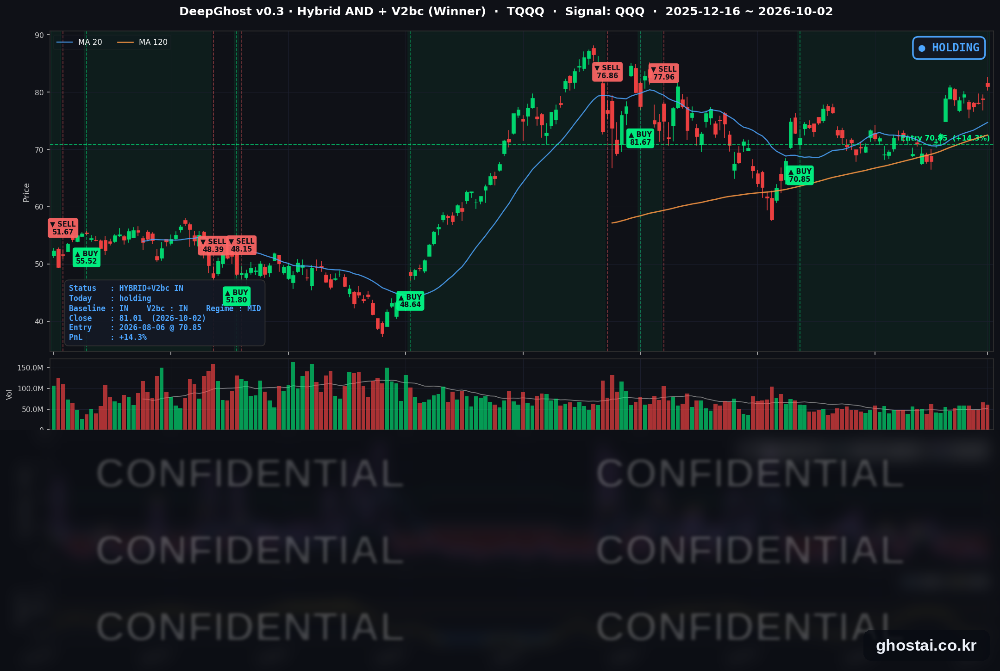

금리 24년 최고에도 QQQ는 사상최고가
· Ghost.AI 데일리 리포트
👻 매일 시그널과 히스토리를 홈페이지에서 한눈에 → www.ghostai.co.kr
회원 페이지 안내 — 회원 가입하시면 커버리지 전 종목의 원본 시그널과 분석 레포트를 매일 확인하실 수 있습니다. 회원 페이지는 블로그·유튜브보다 먼저 업데이트됩니다. 선착순 100명을 모집하고 있으며, 이메일과 필명만으로 가입하실 수 있고 서비스 사용료는 받지 않습니다. 가입 신청 후 운영자 승인을 거쳐 이용하실 수 있습니다.
이번 주(9/28~10/2) 미국 10년물 국채금리는 9월 30일 5.293%로 2002년 5월 이후 가장 높은 종가를 기록했고, 주간으로 9.3bp 올라 5주 연속 상승했습니다. 8월 PCE 물가가 예상보다 낮았고 9월 고용은 2.9만 명 증가에 그쳐 10월 금리 인상 기대는 크게 줄었지만, 장기 금리는 내려오지 않았습니다. 그런 가운데 나스닥100(QQQ)은 금요일 사상 최고 종가로 한 주를 마쳤습니다. 다만 S&P 500 구성종목 중 이번 주 오른 종목은 3분의 1에 그쳤습니다. TQQQ 전략은 한 주 내내 보유를 유지했고, 10월 2일 종가 기준 수익률은 진입 이후 가장 높은 +14.34%입니다.
📊 전략 상태 (10월 2일 종가 기준)
| 항목 | 내용 |
|---|---|
| 다음 거래일(10/5 월) 할 일 | ✅ 아무것도 안 해도 됩니다 (10/2 종가 기준 새 신호 없음) |
| 포지션 상태 | 📈 TQQQ 보유 중 (IN POSITION) |
| 매수 진입일 | 2026-08-06 (41거래일째, 달력 기준 57일) |
| 진입가 → 현재가 | $70.85 → $81.01 |
| 현재 포지션 수익 | +14.34% |
TQQQ 시그널 — IN POSITION
현재 상태: 매수 포지션 유지 중 | 이번 포지션 수익 +14.34%

TQQQ는 이번 주 79.60달러에서 81.01달러로 1.77% 올랐습니다. 월요일에 3.22% 내려 77.04달러로 마감했고(9월 10일 이후 가장 큰 하루 하락), 화~목요일에 조금씩 오른 뒤 금요일에 2.90% 올랐습니다(9월 21일 이후 가장 큰 하루 상승). 전략의 평가수익률은 전주 말 +12.35%에서 월요일 +8.74%까지 줄었다가, 금요일 +14.34%로 8월 6일 진입 이후 가장 높은 수준에서 한 주를 마쳤습니다. 이번 주에는 새 매매 신호가 없었습니다. 모델 기준으로 매도 신호까지의 여유는 월요일 하락 때 줄었다가 화·수요일에 다시 늘어, 주말 기준으로는 전주 말과 비슷한 수준입니다.
8월 6일 진입 이후 10년물 금리는 4.670%에서 5.277%로 약 61bp 올랐지만, 같은 기간 QQQ 종가도 4.9% 올랐습니다. 모델은 금리 수준이 아니라 나스닥100의 가격 흐름을 기준으로 판단합니다. 장기 금리 상승이 나스닥100의 큰 하루 하락으로 이어지는지가 다음 주에도 전략 상태를 가르는 변수입니다. 참고로 QQQ는 사상 최고 종가지만, TQQQ는 사상 최고 종가(6월 2일, 87.22달러)보다 7.12% 낮습니다. 3배 레버리지 ETF는 변동이 큰 구간을 거치면 기초지수가 전고점을 넘어도 같은 비율로 회복하지 못합니다.
이번 주 미국 시장 — 주간 결산
주간 지수
| 지수 | 9/25 종가 | 10/2 종가 | 주간 등락 |
|---|---|---|---|
| S&P 500 | 7,743.41 | 7,722.72 | -0.27% |
| 나스닥 종합 | 27,068.72 | 27,190.86 | +0.45% |
| 다우존스 | 51,828.62 | 51,176.96 | -1.26% |
| IWM (러셀 2000 ETF) | 281.97 | 281.52 | -0.16% |
| QQQ (나스닥100) | 744.50 | 749.58 | +0.68% |
| TQQQ | 79.60 | 81.01 | +1.77% |
주간으로 오른 지수는 나스닥 종합뿐이고, 다우는 1.26% 내렸습니다. QQQ는 금요일 749.58달러로 9월 22일의 사상 최고 종가(747.46달러)를 넘었습니다. 나스닥 종합은 사상 최고 종가보다 0.20%, S&P 500은 0.98% 낮습니다. 지수 하락 폭은 작았지만 S&P 500 구성종목 중 이번 주 오른 종목은 33.7%였고, 등락률 중간값(-1.16%)도 지수(-0.27%)보다 낮았습니다. 소수의 대형 기술주가 오르고 대부분의 종목은 내린 흐름이 9월에 이어 계속됐습니다.
요일별 흐름
| 날짜 | S&P 500 | QQQ | TQQQ | 10년물 | 주요 재료 |
|---|---|---|---|---|---|
| 9/28(월) | -0.77% | -1.07% | -3.22% | 5.240% (+5.6bp) | 트럼프 대통령의 이란 호르무즈 재개방안 거부 뒤 유가·단기 금리 상승, 메타 기업용 AI 진출에 소프트웨어 약세 |
| 9/29(화) | -0.17% | +0.19% | +0.55% | 5.255% (+1.5bp) | 사우디 송유관 재가동에 유가 하락, 윌리엄스 총재 "서두를 필요 없다", 소비자신뢰 81.9 |
| 9/30(수) | -0.25% | +0.25% | +0.74% | 5.293% (+3.8bp) | 8월 PCE 예상 하회, 2분기 GDP 상향, 10년물 2002년 5월 이후 최고 종가 |
| 10/1(목) | +0.19% | +0.31% | +0.90% | 5.237% (-5.6bp) | 10년물 장중 5.342% 뒤 하락 마감, ISM 제조업 가격지수 77.9 |
| 10/2(금) | +0.73% | +1.02% | +2.90% | 5.277% (+4.0bp) | 9월 고용 2.9만 명 증가, QQQ 사상 최고 종가 |
국채 금리 동향
| 만기 | 9/25 | 10/2 | 주간 | 주중 최고 종가 |
|---|---|---|---|---|
| 3개월 | 4.070% | 3.993% | -7.7bp | 4.065% (9/29) |
| 2년 (재무부 공시) | 4.81% | 4.83% | +2bp | 4.92% (9/28) |
| 5년 | 5.007% | 5.055% | +4.8bp | 5.089% (9/30) |
| 10년 | 5.184% | 5.277% | +9.3bp | 5.293% (9/30) |
| 30년 | 5.504% | 5.630% | +12.6bp | 5.638% (9/30) |
단기 금리는 내리고 장기 금리는 오른 한 주였습니다. 10년물과 30년물은 9월 22일부터 9월 30일까지 7거래일 연속 올랐습니다. 10년물은 9월 30일 5.293%로 2002년 5월 이후, 30년물은 5.638%로 2002년 6월 이후 가장 높은 종가를 기록했습니다. 10월 1일에는 10년물이 장중 5.342%까지 올라 2002년 4월 이후 가장 높은 수준을 기록한 뒤 5.237%로 내려 마감했습니다. 금요일 고용보고서 직후 10년물은 5.157%까지 내렸다가 5.277%로 올라 마감했습니다.
2년물은 월요일 유가 상승과 함께 4.92%까지 올랐다가 PCE와 고용 지표 뒤 내려 주간으로는 2bp 오르는 데 그쳤습니다. 그 결과 10년물과 2년물의 차이는 36bp에서 45bp로, 10년물과 3개월물의 차이는 111.4bp에서 128.4bp로 벌어져 커브가 가팔라졌습니다(스티프닝). 역전은 없습니다. 10년물은 9월 한 달 53.5bp 올라 2022년 9월 이후 가장 큰 월간 상승을, 3분기에는 87.5bp 올라 1994년 1분기 이후 가장 큰 분기 상승을 기록했습니다.
연준 발언 & 금리 패스
이번 주 연준 인사 발언은 대부분 물가를 우려하는 매파적인 내용이었지만, 추가 인상 시점은 정하지 않았습니다.
- 쿡(Cook) 이사 (9/28): 9월 인상에 찬성했다고 밝히고, 8월까지 12개월 물가를 전체 3.8%, 근원 3.4%로 추정하며 "목표의 두 배에 가깝다"고 했습니다.
- 윌리엄스(Williams) 뉴욕 연은 총재 (9/29): "서두를 필요가 없다"면서, 경제가 전망대로 가면 "연말에 한 번 더 인상하는 것이 적절할 수 있다"고 했습니다. 같은 날 바(Barr) 이사는 추가 정책 조정이 필요할 가능성이 높다고 했고, 굴스비(Goolsbee) 시카고 연은 총재는 5년 반 동안 물가가 목표를 웃돈 점을 지적했습니다.
- 제퍼슨(Jefferson) 부의장 (10/1): 9월 인상은 적절했다고 평가하고 다음 결정은 데이터에 맡겼습니다. 같은 날 카시카리(Kashkari) 미니애폴리스 연은 총재는 10월 인상에 "강한 견해는 없다"고 했습니다.
- 로건(Logan) 댈러스 연은 총재 (10/1, 올해 FOMC 투표권자): "현재로서는 정책금리 범위를 50bp 이상 더 올려야 한다"고 했고, 최근 몇 주 장기 금리가 크게 오른 점도 언급했습니다.
시장의 10월 인상 기대는 지표가 나올 때마다 낮아졌습니다. 금리선물에 반영된 10월 인상 확률은 월요일 70% 안팎에서 윌리엄스 총재 발언 뒤 50% 안팎, PCE 발표 뒤 40% 안팎, 고용보고서 뒤 20% 안팎으로 내려갔다고 보도됐습니다(CME FedWatch 등). 반면 12월까지의 인상 확률은 90% 가까이 유지돼, 장기 금리가 내려오지 않은 배경으로 거론됐습니다. 연준은 9월 16일 정책금리를 3.75~4.00%로 올렸고, 다음 FOMC는 10월 27~28일입니다.
이번 주 핵심 이슈
- 장기 금리 24년 만의 최고. 10년물은 7거래일 연속 올라 5.293%로 2002년 5월 이후 최고 종가를 기록했고, 고용 부진 뒤에도 5.277%로 한 주를 마쳤습니다. 물가 지표가 낮게 나와 단기 금리는 내렸지만, 8월 실질 소비(+0.6%)와 2분기 성장률 상향(1.5% → 2.2%)이 확인되면서 장기 금리는 내려오지 않았습니다.
- 물가·고용 지표가 10월 인상 기대를 낮췄습니다. 8월 PCE 물가는 전년 대비 3.4%, 근원 3.0%로 예상(3.7%, 3.3%)을 밑돌았습니다. 9월 비농업 고용은 2.9만 명 늘어 예상(8만~9만 명)을 크게 밑돌았고, 7·8월 고용은 합계 6.0만 명 하향 수정됐으며 실업률은 4.1%에서 4.2%로 올랐습니다.
- 좁은 장세가 이어졌습니다. QQQ는 사상 최고 종가를 기록했지만 S&P 500 구성종목의 3분의 2는 한 주 동안 내렸습니다. 9월 한 달로도 나스닥 종합(+1.86%)만 올랐고 S&P 500 -0.45%, 다우 -4.29%, IWM -5.46%였습니다. 이번 주에는 반도체·AI 하드웨어가 강했고, 메타의 기업용 AI 진출과 OpenAI의 AI 에이전트 공개가 이어지며 소프트웨어·플랫폼 종목은 등락이 엇갈렸습니다.
변동성 & 투자심리
VIX는 전주 말 14.87에서 15.31로 주간 2.96% 올랐습니다. 월~목요일 종가는 16.04~16.39 범위였고, 10월 1일에는 장중 17.59까지 올랐습니다. 금요일에는 6.59% 내려 이번 주 가장 낮은 종가로 마감했습니다. 장기 금리가 24년 만의 수준까지 올랐지만 VIX는 16 안팎에 머물렀습니다.
CNN 공포탐욕지수는 금요일 기준 31.2로 "공포" 구간입니다. 1주 전 36.9, 한 달 전 46.1, 1년 전 54.5였고, 한 주 내내 30 안팎의 공포 구간에 머물렀습니다. 7개 구성 지표 중 주가 강도와 시장 폭이 극단적 공포입니다. 지수는 고점 근처지만 오른 종목이 적은 장세가 지표에 그대로 나타났습니다.
매크로 & 원자재
| 품목 | 9/25 | 10/2 | 주간 |
|---|---|---|---|
| WTI 원유 | $92.41 | $91.26 | -1.24% |
| 원유 ETF (USO) | $148.33 | $147.37 | -0.65% |
| 금 | $4,321.20 | $4,172.10 | -3.45% |
| 금 ETF (GLD) | $393.41 | $380.14 | -3.37% |
WTI는 주간 변화는 작았지만 하루 변동이 컸습니다. 화요일 사우디의 송유관 재가동에 3.48% 내렸고, 목요일 중국 정유사의 석유제품 수출 중단 보도에 2.71% 올랐으며, 금요일 G7의 비축유 1억 배럴 방출 합의에 1.73% 내렸습니다. 금은 월요일 금리와 달러가 함께 오르며 3.54% 내렸고, 이후 주말까지 월요일 종가 근처에 머물렀습니다.
- 소비자신뢰지수 (9/29): 81.9로 예상(89.2)을 크게 밑돌아 2014년 이후 가장 낮았습니다.
- 2분기 GDP 3차 추정 (9/30): 연율 2.2%로 2차 추정(1.5%)보다 상향됐습니다.
- ISM 제조업 (10/1): 54.5로 9개월 연속 확장했고, 가격지수는 77.9로 6.8포인트 올랐습니다.
- 연방정부 예산: 의회가 12월 11일까지의 임시 예산안을 통과시켜 10월 1일 셧다운은 없었습니다.
주요 종목 동향 (주간)
| 종목 | 9/25 종가 | 10/2 종가 | 주간 | 비고 |
|---|---|---|---|---|
| NVDA | 225.07 | 233.95 | +3.95% | 자사주 매입 한도 1,500억 달러 증액(9/28), 10/2 장중 사상 최고치 |
| AMZN | 249.67 | 251.52 | +0.74% | |
| AVGO | 352.81 | 355.14 | +0.66% | 10/2 반도체 강세에 +3.35% |
| MSFT | 516.17 | 517.53 | +0.26% | |
| GOOGL | 343.92 | 343.50 | -0.12% | 차세대 모델 Gemini 4 Argon 제한 공개(10/1) |
| TSLA | 372.11 | 370.59 | -0.41% | 3분기 인도량 486,532대(예상 약 46만 대), 10/2 +4.65% |
| MU | 1,082.28 | 1,074.89 | -0.68% | 9/30 실적 발표, 다음 분기 매출 가이던스가 시장 예상 상회 |
| AAPL | 341.07 | 333.69 | -2.16% | 9/29 BofA의 외부 AI 에이전트 영향 지적에 -2.66% |
| INTC | 123.00 | 119.33 | -2.98% | 9/28 -5.67%, 9월 한 달 +34.32% |
| META | 751.66 | 728.08 | -3.14% | 기업용 AI 사업부 신설 발표(9/28), AI 에이전트 Muse 서비스 발표(9/29) |
| NFLX | 71.15 | 67.06 | -5.75% | |
| QCOM | 201.97 | 184.87 | -8.47% | 9/28 -7.17% (6월 26일 이후 최대 낙폭) |
커버리지 12종목 중 4종목이 오르고 8종목이 내렸습니다. 주간 상승 폭이 가장 큰 종목은 엔비디아였고, 9월에 크게 오른 퀄컴·인텔과 메타는 주초에 크게 내렸습니다. 금요일에는 도시바의 HDD 증설 보도에 시게이트·웨스턴디지털이 10% 넘게 내렸습니다.
주말 소식 (10/3~10/4)
- 10/3(토): 예멘 후티 반군이 사우디 리야드 인근 아람코 시설을 미사일·드론으로 공격했다고 주장했고, 사우디 주도 연합군은 이 주장이 사실을 오도한다고 반박했습니다.
- 10/4(일): 예멘 알무카 남쪽 해상에서 유조선 근처 폭발이 보고됐고, 선원은 무사했습니다. 이란 의회 의장은 미국이 중재자를 통해 새 제안을 보냈다고 밝히면서도, 이란이 내건 7개 조건이 충족되기 전에는 호르무즈 해협을 열지 않겠다고 했습니다.
다음 주 체크포인트 (10/5–10/9, 미 동부시간)
- 10/5(월) 10:00 9월 ISM 서비스업 (8월 55.4, 한국시간 오후 11시)
- 10/6(화) 08:30 8월 무역수지 / 10:45 보우먼(Bowman) 감독 부의장 연설 (규제·감독 주제) / 13:00 3년물 국채 입찰 (580억 달러)
- 10/7(수) 13:00 10년물 국채 입찰 (390억 달러) / 14:00 9월 FOMC 의사록 (한국시간 10/8 오전 3시)
- 10/8(목) 04:30 월러(Waller) 이사 "경제 전망" 연설 (튀르키예 중앙은행 이스탄불 경제포럼) / 06:00 무렵 펩시코 3분기 실적 / 13:00 30년물 국채 입찰 (220억 달러)
- 10/9(금) 10:00 10월 미시간대 소비자심리 예비치 (9월 확정치 48.1) / 10:00 델타항공 3분기 실적 콘퍼런스콜
- 10/12(월) 콜럼버스 데이 — 미국 채권시장은 휴장(SIFMA 권고)하고, 주식시장은 정상 개장합니다.
- 이후 10/13 JP모건 3분기 실적, 10/14 9월 CPI·연준 베이지북, 10/15 9월 PPI·소매판매, 10/27~28 FOMC
이번 주 장기 금리가 크게 오른 만큼, 다음 주에는 9월 회의 의사록에서 추가 인상 시점에 대한 논의가 어떻게 나오는지와 10년물·30년물 입찰 결과가 금리 방향을 정할 재료입니다. TQQQ 전략에서는 이 재료들이 나스닥100의 큰 하루 하락으로 이어지는지가 확인 포인트입니다.
Ghost.AI — Quantitative AI Investment
Model: DeepGhost v0.3 | Transformer-Based Deep Learning
Coverage: 13 tickers | Updated every trading day after US market close
⚠️ 본 자료는 정보 제공 목적으로만 작성되었으며 투자 권유가 아닙니다. 모든 투자의 책임은 투자자 본인에게 있습니다. 과거 성과가 미래 수익을 보장하지 않습니다.
[유의사항]
- 본 서비스는 불특정 다수를 대상으로 발행되는 단방향 정보 제공 서비스이며, 투자자 개인의 재산 상황·투자 목적·위험 선호도를 반영한 개별 투자 조언이 아닙니다.
- 고스트에이아이 주식회사는 고객과 쌍방향 의사소통(개별 상담, 맞춤형 자문 등)을 제공하지 않습니다.
- 본 콘텐츠는 투자 권유 또는 매매 주문의 청약·청약의 권유에 해당하지 않으며, 최종 투자 판단 및 그에 따른 손익의 책임은 전적으로 투자자 본인에게 있습니다.
고스트에이아이 주식회사